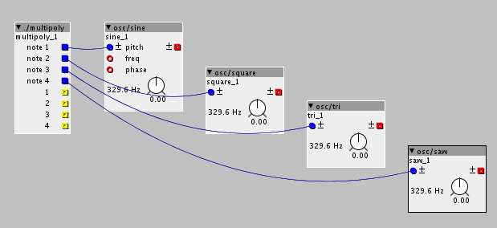

Is it possible to allocate individual voices from within a polyphonic subpatch to separate inputs? I would like to have each individual voice go into a different 'instrument'.
The contents of the subpatch on the left in the crude sketch below is a midi/in/keyb hooked to four outputs each for the trigger and notes. As suspected, it didn't work, but I hope the image is clarifying what I'm trying to do.
Each voice coming from the subpatch would go through the respective oscillator in order of note played. Looked through the forums for an answer to this but couldn't seem to find this specific application.
